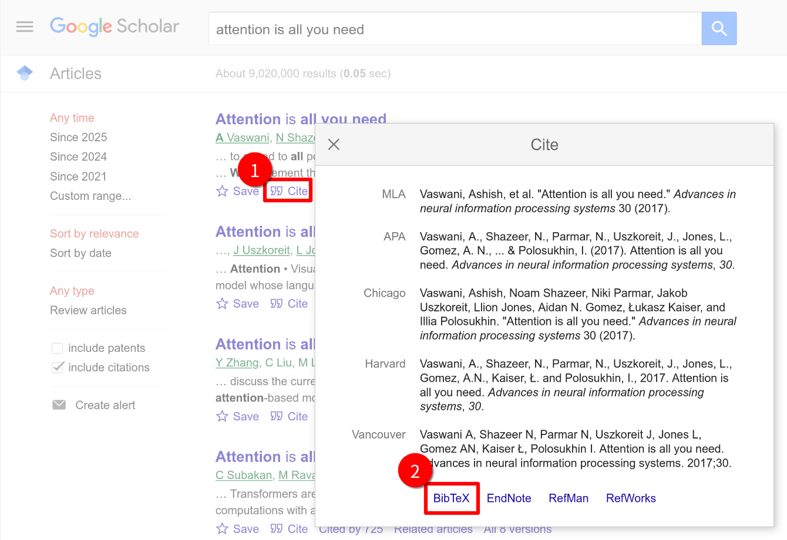

BibTeX是一套用于管理文献、产生文献目录的格式。 使用上通常与LaTeX一起使用。(摘自WikiPedia)
0. 内容与格式的分离
在 Word 中，你手动写下“[1] 王小明. 论文标题...”，一旦要调整格式（比如要把作者变斜体，或者按年份排序），你需要手动修改几十处。而LaTeX的逻辑是数据库思维：
.bib文件（数据库）： 只管存储数据（作者是谁、哪年发的），不关心长什么样。.tex文件（逻辑）： 只管引用数据（这里引用了这篇文章），不关心具体内容。- 样式命令（渲染）： 决定最终长什么样（是
[1]还是(Wang, 2025)）。
有了BibTeX，我们可以方便的在一个文件中收集需要的文献，并在LaTeX文件中引用它。
1. 创建包含参考文献条目 `.bib` 文件
首先，我们需要创建一个后缀为 .bib 的文件（例如 references.bib），并在其中添加参考文献条目。每个参考文献条目都需要遵循BibTeX格式，通常包括如作者、标题、出版年份等信息。
一个bib文件中可以包含多个条目，下面我们来看一下一个典型的参考文献条目格式是怎么样的：
@book{latexguide,
author = {Leslie Lamport},
title = {LaTeX: A Document Preparation System},
publisher = {Addison-Wesley},
year = {2077},
edition = {2nd}
}
让我们逐字段介绍一下这个格式：
@标志一个条目的开始
│
│ 文档类型
│ 固定语法: book, article...
│ │
│ │ 引用标签
│ │ 自定义ID: 在正文中引用
│ │ │
┌┴┐┌─┴──┐ ┌─┴──────────┐
│@││book│{│ latexguide │,
└─┘└────┘ └────────────┘
字段名 (Field Name)
固定关键字: author, title...
│
│ 字段内容
│ 具体的文献信息
┌─┴────┐ ┌─┴──────────────┐
│author│ = {│ Leslie Lamport │}, ◄────── 注意：字段结束必须加英文逗号
└──────┘ └────────────────┘
title = {LaTeX: A Document Preparation System},
publisher = {Addiso.-Wesley},
year = {2077},
edition = {2nd}
...
◄────── 可以添加更多字段，
字段的顺序不影响编译的效果
...
}
例如，我们在与.tex文件相同的目录下创建一个 references.bib 文件，包含两个条目的示例内容如下：
@book{latexguide,
author = {Leslie Lamport},
title = {LaTeX: A Document Preparation System},
publisher = {Publisher},
year = {2077},
edition = {2nd},
}
@misc{citename,
author = {chenyu76},
title = {Add citation in LaTeX},
year = {2025}
}
可以在一个文件中添加任意多的条目，默认情况下，只有在正文中使用\cite命令引用的条目，才会出现在最后编译好的文档中。
每个@开头是一个条目，条目内部填入作者、标题等信息；这个示例中第一个条目中book是文档类型， 此外还有article, inproceedings, misc等，如它们的名称所暗示的，它们分别代表书籍、文章等格式；latexguide是引用时使用的名称，可以在之后使用类似的格式添加更多内容。对于正经期刊上发表的论文，其对应的bib条目一般可以直接在Google Scholar或其他文献网站上复制获得，不推荐手写；或者你非常懒的话，也可以让AI生成，但务必注意核对信息。
下图是在Google Scholar上获取对应的条目方式。

Important
网络上获取的文献的条目有可能存在信息不准确、错误或遗漏的情况，请注意甄别。
Note
不同网站上获取的条目之间可能存在格式差异，例如同样名为Xiao Ming的作者可能在A处叫“Xiao M.” ，在另一个地方又叫“Ming Xiao”之类的，请注意。这需要手动修改统一。
2. 引用参考文献
在LaTeX文件中，使用 \cite{} 命令引用参考文献。例如：
This is a reference to the LaTeX guide \cite{latexguide}.
这里的latexguide是上面的例子中定义的引用标签。
3. 插入参考文献列表
在文档任意位置插入使用的参考文献列表（通常是文末，\end{document}前）。只有使用了\cite{}命令插入的文献才会出现。
使用 \bibliographystyle{} 命令指定参考文献的格式，并使用 \bibliography{} 命令指定 .bib 文件的路径。在编译好的文档中，参考文献列表会出现在\bibliography{}命令调用处。
\bibliographystyle{plain} % 参考文献的样式
\bibliography{references.bib} % 引用.bib文件
Important
在这个示例中，我们之前创建的references.bib与.tex文件位于同一目录，所以可以直接使用\bibliography{references.bib}引用bib文件。但是如果bib文件与tex文件不在同一个目录下，就需要在{ }内填写其位置。
常用样式一览
修改 \bibliographystyle{...} 中的参数，可以瞬间改变所有文献的格式：
| 样式代码 | 排序方式 | 显示效果 (正文 / 列表) |
|---|---|---|
plain |
按作者姓名首字母排序 | [1] / [1] Lamport... |
unsrt |
按在文中出现的先后排序 | [1] / [1] Lamport... |
alpha |
字母+年份排序 | [Lam77] / [Lam77] Lamport... |
abbrv |
类似 plain，但简写名字 | [1] / [1] L. Lamport... |
Tips
- 如果在beamer中使用，可以添加 allowframebreaks 参数使文献列表自动换页。
\begin{frame}[allowframebreaks]{References}
\bibliographystyle{plain}
\bibliography{references}
\end{frame}
beamer默认使用图标而不是[1], [2]样式的编号，可以使用下面命令给文献列表编号。
\setbeamertemplate{bibliography item}{\insertbiblabel}
- 可以通过使用
hyperref宏包使引用标签可点击。
\usepackage{hyperref}
% 可以使用`[hidelinks]`选项隐藏pdf中的红色框框
%\usepackage[hidelinks]{hyperref}
- 多个作者怎么写不要用逗号分隔。
- 不要用逗号分隔作者！必须用
and连接。 - 错误：
author = {San Zhang, Si Li} - 正确：
author = {San Zhang and Si Li}(BibTeX 会自动处理成 "S. Zhang, S. Li" 等格式)。
- 不要用逗号分隔作者！必须用
- 参考文献列表里只有一部分文献？
- BibTeX 默认只显示被引用的文献。如果你想显示数据库里的所有文献（包括没引用的），请在
\bibliography前加上\nocite{*}。
- BibTeX 默认只显示被引用的文献。如果你想显示数据库里的所有文献（包括没引用的），请在
4. 完整示例
\documentclass{article}
\begin{document}
This is a reference to the LaTeX guide \cite{latexguide}.
\bibliographystyle{plain} % 选择参考文献的格式
\bibliography{references.bib} % 引用.bib文件
\end{document}
你可以在这里下载这个示例。
5. 编译流程
在 LaTeX 中正确处理参考文献通常需要编译 4 次。如果你使用 Overleaf，它会自动处理；但在本地使用命令行或编辑器时，了解原理很重要。
为什么需要这么多次？
LaTeX 处理参考文献不是一次性完成的，它需要一个“信使”—— .aux (辅助) 文件。
xelatex(第1遍 - 抄录)：LaTeX 读一遍正文，看到\cite{latexguide}，它在.aux小本本上记下：“这里引用了latexguide”。此时文档中显示为[?]。bibtex(第2遍 - 搬运)：BibTeX 程序读取.aux，去.bib数据库里找对应条目，按样式整理好，生成.bbl文件（真正的列表代码）。xelatex(第3遍 - 插入)：LaTeX 读取.bbl文件，把参考文献列表排版到文末。xelatex(第4遍 - 链接)：LaTeX 终于确认了每一篇文献的最终编号（如 [1]），将正文中的[?]替换为正确的[1]。
命令行操作示例：
xelatex yourfile.tex
bibtex yourfile.aux # 注意这里是对 .aux 文件运行 bibtex
xelatex yourfile.tex
xelatex yourfile.tex
Tip
如果你只修改了正文文字，只需运行一遍 xelatex；只有当你新增/删除引用或修改了 bib 文件时，才需要完整跑这一套流程。
Tip
可以使用 latexmk 或别的自动化工具减少手动重复编译的次数。